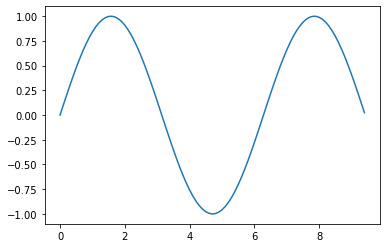
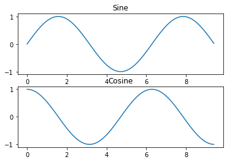

!python --versionPython 3.6.9Data Analysis
Justin Johnson, Volodymr Kuleshov, and Issac Caswell
June 5, 2023
Python is a great general-purpose programming language on its own, but with the help of a few popular libraries (numpy, scipy, matplotlib) it becomes a powerful environment for scientific computing.
We expect that many of you will have some experience with Python and numpy; for the rest of you, this section will serve as a quick crash course both on the Python programming language and on the use of Python for scientific computing.
Some of you may have previous knowledge in Matlab, in which case we also recommend the numpy for Matlab users page (https://docs.scipy.org/doc/numpy-dev/user/numpy-for-matlab-users.html).
In this tutorial, we will cover:
As of Janurary 1, 2020, Python has officially dropped support for python2. We’ll be using Python 3.7 for this iteration of the course. You can check your Python version at the command line by running python --version. In Colab, we can enforce the Python version by clicking Runtime -> Change Runtime Type and selecting python3. Note that as of April 2020, Colab uses Python 3.6.9 which should run everything without any errors.
Python is a high-level, dynamically typed multiparadigm programming language. Python code is often said to be almost like pseudocode, since it allows you to express very powerful ideas in very few lines of code while being very readable. As an example, here is an implementation of the classic quicksort algorithm in Python:
def quicksort(arr):
if len(arr) <= 1:
return arr
pivot = arr[len(arr) // 2]
left = [x for x in arr if x < pivot]
middle = [x for x in arr if x == pivot]
right = [x for x in arr if x > pivot]
return quicksort(left) + middle + quicksort(right)
print(quicksort([3,6,8,10,1,2,1]))[1, 1, 2, 3, 6, 8, 10]Integers and floats work as you would expect from other languages:
3 <class 'int'>
ERROR! Session/line number was not unique in database. History logging moved to new session 60print(x + 1) # Addition
print(x - 1) # Subtraction
print(x * 2) # Multiplication
print(x ** 2) # Exponentiation4
2
6
9Note that unlike many languages, Python does not have unary increment (x++) or decrement (x–) operators.
Python also has built-in types for long integers and complex numbers; you can find all of the details in the documentation.
Python implements all of the usual operators for Boolean logic, but uses English words rather than symbols (&&, ||, etc.):
Now we let’s look at the operations:
hello = 'hello' # String literals can use single quotes
world = "world" # or double quotes; it does not matter
print(hello, len(hello))hello 5String objects have a bunch of useful methods; for example:
s = "hello"
print(s.capitalize()) # Capitalize a string
print(s.upper()) # Convert a string to uppercase; prints "HELLO"
print(s.rjust(7)) # Right-justify a string, padding with spaces
print(s.center(7)) # Center a string, padding with spaces
print(s.replace('l', '(ell)')) # Replace all instances of one substring with another
print(' world '.strip()) # Strip leading and trailing whitespaceHello
HELLO
hello
hello
he(ell)(ell)o
worldYou can find a list of all string methods in the documentation.
Python includes several built-in container types: lists, dictionaries, sets, and tuples.
A list is the Python equivalent of an array, but is resizeable and can contain elements of different types:
xs = [3, 1, 2] # Create a list
print(xs, xs[2])
print(xs[-1]) # Negative indices count from the end of the list; prints "2"[3, 1, 2] 2
2As usual, you can find all the gory details about lists in the documentation.
In addition to accessing list elements one at a time, Python provides concise syntax to access sublists; this is known as slicing:
nums = list(range(5)) # range is a built-in function that creates a list of integers
print(nums) # Prints "[0, 1, 2, 3, 4]"
print(nums[2:4]) # Get a slice from index 2 to 4 (exclusive); prints "[2, 3]"
print(nums[2:]) # Get a slice from index 2 to the end; prints "[2, 3, 4]"
print(nums[:2]) # Get a slice from the start to index 2 (exclusive); prints "[0, 1]"
print(nums[:]) # Get a slice of the whole list; prints ["0, 1, 2, 3, 4]"
print(nums[:-1]) # Slice indices can be negative; prints ["0, 1, 2, 3]"
nums[2:4] = [8, 9] # Assign a new sublist to a slice
print(nums) # Prints "[0, 1, 8, 9, 4]"[0, 1, 2, 3, 4]
[2, 3]
[2, 3, 4]
[0, 1]
[0, 1, 2, 3, 4]
[0, 1, 2, 3]
[0, 1, 8, 9, 4]You can loop over the elements of a list like this:
If you want access to the index of each element within the body of a loop, use the built-in enumerate function:
When programming, frequently we want to transform one type of data into another. As a simple example, consider the following code that computes square numbers:
[0, 1, 4, 9, 16]You can make this code simpler using a list comprehension:
List comprehensions can also contain conditions:
A dictionary stores (key, value) pairs, similar to a Map in Java or an object in Javascript. You can use it like this:
d = {'cat': 'cute', 'dog': 'furry'} # Create a new dictionary with some data
print(d['cat']) # Get an entry from a dictionary; prints "cute"
print('cat' in d) # Check if a dictionary has a given key; prints "True"cute
Trueprint(d.get('monkey', 'N/A')) # Get an element with a default; prints "N/A"
print(d.get('fish', 'N/A')) # Get an element with a default; prints "wet"N/A
wetdel d['fish'] # Remove an element from a dictionary
print(d.get('fish', 'N/A')) # "fish" is no longer a key; prints "N/A"N/AYou can find all you need to know about dictionaries in the documentation.
It is easy to iterate over the keys in a dictionary:
d = {'person': 2, 'cat': 4, 'spider': 8}
for animal, legs in d.items():
print('A {} has {} legs'.format(animal, legs))A person has 2 legs
A cat has 4 legs
A spider has 8 legsDictionary comprehensions: These are similar to list comprehensions, but allow you to easily construct dictionaries. For example:
A set is an unordered collection of distinct elements. As a simple example, consider the following:
animals = {'cat', 'dog'}
print('cat' in animals) # Check if an element is in a set; prints "True"
print('fish' in animals) # prints "False"True
Falseanimals.add('fish') # Add an element to a set
print('fish' in animals)
print(len(animals)) # Number of elements in a set;True
3animals.add('cat') # Adding an element that is already in the set does nothing
print(len(animals))
animals.remove('cat') # Remove an element from a set
print(len(animals)) 3
2Loops: Iterating over a set has the same syntax as iterating over a list; however since sets are unordered, you cannot make assumptions about the order in which you visit the elements of the set:
animals = {'cat', 'dog', 'fish'}
for idx, animal in enumerate(animals):
print('#{}: {}'.format(idx + 1, animal))#1: dog
#2: cat
#3: fishSet comprehensions: Like lists and dictionaries, we can easily construct sets using set comprehensions:
A tuple is an (immutable) ordered list of values. A tuple is in many ways similar to a list; one of the most important differences is that tuples can be used as keys in dictionaries and as elements of sets, while lists cannot. Here is a trivial example:
Python functions are defined using the def keyword. For example:
def sign(x):
if x > 0:
return 'positive'
elif x < 0:
return 'negative'
else:
return 'zero'
for x in [-1, 0, 1]:
print(sign(x))negative
zero
positiveWe will often define functions to take optional keyword arguments, like this:
def hello(name, loud=False):
if loud:
print('HELLO, {}'.format(name.upper()))
else:
print('Hello, {}!'.format(name))
hello('Bob')
hello('Fred', loud=True)Hello, Bob!
HELLO, FRED###Classes
The syntax for defining classes in Python is straightforward:
class Greeter:
# Constructor
def __init__(self, name):
self.name = name # Create an instance variable
# Instance method
def greet(self, loud=False):
if loud:
print('HELLO, {}'.format(self.name.upper()))
else:
print('Hello, {}!'.format(self.name))
g = Greeter('Fred') # Construct an instance of the Greeter class
g.greet() # Call an instance method; prints "Hello, Fred"
g.greet(loud=True) # Call an instance method; prints "HELLO, FRED!"Hello, Fred!
HELLO, FRED##Numpy
Numpy is the core library for scientific computing in Python. It provides a high-performance multidimensional array object, and tools for working with these arrays. If you are already familiar with MATLAB, you might find this tutorial useful to get started with Numpy.
To use Numpy, we first need to import the numpy package:
###Arrays
A numpy array is a grid of values, all of the same type, and is indexed by a tuple of nonnegative integers. The number of dimensions is the rank of the array; the shape of an array is a tuple of integers giving the size of the array along each dimension.
We can initialize numpy arrays from nested Python lists, and access elements using square brackets:
a = np.array([1, 2, 3]) # Create a rank 1 array
print(type(a), a.shape, a[0], a[1], a[2])
a[0] = 5 # Change an element of the array
print(a) <class 'numpy.ndarray'> (3,) 1 2 3
[5 2 3]Numpy also provides many functions to create arrays:
Numpy offers several ways to index into arrays.
Slicing: Similar to Python lists, numpy arrays can be sliced. Since arrays may be multidimensional, you must specify a slice for each dimension of the array:
import numpy as np
# Create the following rank 2 array with shape (3, 4)
# [[ 1 2 3 4]
# [ 5 6 7 8]
# [ 9 10 11 12]]
a = np.array([[1,2,3,4], [5,6,7,8], [9,10,11,12]])
# Use slicing to pull out the subarray consisting of the first 2 rows
# and columns 1 and 2; b is the following array of shape (2, 2):
# [[2 3]
# [6 7]]
b = a[:2, 1:3]
print(b)[[2 3]
[6 7]]A slice of an array is a view into the same data, so modifying it will modify the original array.
You can also mix integer indexing with slice indexing. However, doing so will yield an array of lower rank than the original array. Note that this is quite different from the way that MATLAB handles array slicing:
# Create the following rank 2 array with shape (3, 4)
a = np.array([[1,2,3,4], [5,6,7,8], [9,10,11,12]])
print(a)[[ 1 2 3 4]
[ 5 6 7 8]
[ 9 10 11 12]]Two ways of accessing the data in the middle row of the array. Mixing integer indexing with slices yields an array of lower rank, while using only slices yields an array of the same rank as the original array:
row_r1 = a[1, :] # Rank 1 view of the second row of a
row_r2 = a[1:2, :] # Rank 2 view of the second row of a
row_r3 = a[[1], :] # Rank 2 view of the second row of a
print(row_r1, row_r1.shape)
print(row_r2, row_r2.shape)
print(row_r3, row_r3.shape)[5 6 7 8] (4,)
[[5 6 7 8]] (1, 4)
[[5 6 7 8]] (1, 4)# We can make the same distinction when accessing columns of an array:
col_r1 = a[:, 1]
col_r2 = a[:, 1:2]
print(col_r1, col_r1.shape)
print()
print(col_r2, col_r2.shape)[ 2 6 10] (3,)
[[ 2]
[ 6]
[10]] (3, 1)Integer array indexing: When you index into numpy arrays using slicing, the resulting array view will always be a subarray of the original array. In contrast, integer array indexing allows you to construct arbitrary arrays using the data from another array. Here is an example:
a = np.array([[1,2], [3, 4], [5, 6]])
# An example of integer array indexing.
# The returned array will have shape (3,) and
print(a[[0, 1, 2], [0, 1, 0]])
# The above example of integer array indexing is equivalent to this:
print(np.array([a[0, 0], a[1, 1], a[2, 0]]))[1 4 5]
[1 4 5]# When using integer array indexing, you can reuse the same
# element from the source array:
print(a[[0, 0], [1, 1]])
# Equivalent to the previous integer array indexing example
print(np.array([a[0, 1], a[0, 1]]))[2 2]
[2 2]One useful trick with integer array indexing is selecting or mutating one element from each row of a matrix:
# Create a new array from which we will select elements
a = np.array([[1,2,3], [4,5,6], [7,8,9], [10, 11, 12]])
print(a)[[ 1 2 3]
[ 4 5 6]
[ 7 8 9]
[10 11 12]]# Create an array of indices
b = np.array([0, 2, 0, 1])
# Select one element from each row of a using the indices in b
print(a[np.arange(4), b]) # Prints "[ 1 6 7 11]"[ 1 6 7 11][[11 2 3]
[ 4 5 16]
[17 8 9]
[10 21 12]]Boolean array indexing: Boolean array indexing lets you pick out arbitrary elements of an array. Frequently this type of indexing is used to select the elements of an array that satisfy some condition. Here is an example:
import numpy as np
a = np.array([[1,2], [3, 4], [5, 6]])
bool_idx = (a > 2) # Find the elements of a that are bigger than 2;
# this returns a numpy array of Booleans of the same
# shape as a, where each slot of bool_idx tells
# whether that element of a is > 2.
print(bool_idx)[[False False]
[ True True]
[ True True]]# We use boolean array indexing to construct a rank 1 array
# consisting of the elements of a corresponding to the True values
# of bool_idx
print(a[bool_idx])
# We can do all of the above in a single concise statement:
print(a[a > 2])[3 4 5 6]
[3 4 5 6]For brevity we have left out a lot of details about numpy array indexing; if you want to know more you should read the documentation.
###Datatypes
Every numpy array is a grid of elements of the same type. Numpy provides a large set of numeric datatypes that you can use to construct arrays. Numpy tries to guess a datatype when you create an array, but functions that construct arrays usually also include an optional argument to explicitly specify the datatype. Here is an example:
x = np.array([1, 2]) # Let numpy choose the datatype
y = np.array([1.0, 2.0]) # Let numpy choose the datatype
z = np.array([1, 2], dtype=np.int64) # Force a particular datatype
print(x.dtype, y.dtype, z.dtype)int64 float64 int64You can read all about numpy datatypes in the documentation.
Basic mathematical functions operate elementwise on arrays, and are available both as operator overloads and as functions in the numpy module:
x = np.array([[1,2],[3,4]], dtype=np.float64)
y = np.array([[5,6],[7,8]], dtype=np.float64)
# Elementwise sum; both produce the array
print(x + y)
print(np.add(x, y))[[ 6. 8.]
[10. 12.]]
[[ 6. 8.]
[10. 12.]][[-4. -4.]
[-4. -4.]]
[[-4. -4.]
[-4. -4.]][[ 5. 12.]
[21. 32.]]
[[ 5. 12.]
[21. 32.]]# Elementwise division; both produce the array
# [[ 0.2 0.33333333]
# [ 0.42857143 0.5 ]]
print(x / y)
print(np.divide(x, y))[[0.2 0.33333333]
[0.42857143 0.5 ]]
[[0.2 0.33333333]
[0.42857143 0.5 ]]# Elementwise square root; produces the array
# [[ 1. 1.41421356]
# [ 1.73205081 2. ]]
print(np.sqrt(x))[[1. 1.41421356]
[1.73205081 2. ]]Note that unlike MATLAB, * is elementwise multiplication, not matrix multiplication. We instead use the dot function to compute inner products of vectors, to multiply a vector by a matrix, and to multiply matrices. dot is available both as a function in the numpy module and as an instance method of array objects:
x = np.array([[1,2],[3,4]])
y = np.array([[5,6],[7,8]])
v = np.array([9,10])
w = np.array([11, 12])
# Inner product of vectors; both produce 219
print(v.dot(w))
print(np.dot(v, w))219
219You can also use the @ operator which is equivalent to numpy’s dot operator.
# Matrix / vector product; both produce the rank 1 array [29 67]
print(x.dot(v))
print(np.dot(x, v))
print(x @ v)[29 67]
[29 67]
[29 67]# Matrix / matrix product; both produce the rank 2 array
# [[19 22]
# [43 50]]
print(x.dot(y))
print(np.dot(x, y))
print(x @ y)[[19 22]
[43 50]]
[[19 22]
[43 50]]
[[19 22]
[43 50]]Numpy provides many useful functions for performing computations on arrays; one of the most useful is sum:
x = np.array([[1,2],[3,4]])
print(np.sum(x)) # Compute sum of all elements; prints "10"
print(np.sum(x, axis=0)) # Compute sum of each column; prints "[4 6]"
print(np.sum(x, axis=1)) # Compute sum of each row; prints "[3 7]"10
[4 6]
[3 7]You can find the full list of mathematical functions provided by numpy in the documentation.
Apart from computing mathematical functions using arrays, we frequently need to reshape or otherwise manipulate data in arrays. The simplest example of this type of operation is transposing a matrix; to transpose a matrix, simply use the T attribute of an array object:
Broadcasting is a powerful mechanism that allows numpy to work with arrays of different shapes when performing arithmetic operations. Frequently we have a smaller array and a larger array, and we want to use the smaller array multiple times to perform some operation on the larger array.
For example, suppose that we want to add a constant vector to each row of a matrix. We could do it like this:
# We will add the vector v to each row of the matrix x,
# storing the result in the matrix y
x = np.array([[1,2,3], [4,5,6], [7,8,9], [10, 11, 12]])
v = np.array([1, 0, 1])
y = np.empty_like(x) # Create an empty matrix with the same shape as x
# Add the vector v to each row of the matrix x with an explicit loop
for i in range(4):
y[i, :] = x[i, :] + v
print(y)[[ 2 2 4]
[ 5 5 7]
[ 8 8 10]
[11 11 13]]This works; however when the matrix x is very large, computing an explicit loop in Python could be slow. Note that adding the vector v to each row of the matrix x is equivalent to forming a matrix vv by stacking multiple copies of v vertically, then performing elementwise summation of x and vv. We could implement this approach like this:
vv = np.tile(v, (4, 1)) # Stack 4 copies of v on top of each other
print(vv) # Prints "[[1 0 1]
# [1 0 1]
# [1 0 1]
# [1 0 1]]"[[1 0 1]
[1 0 1]
[1 0 1]
[1 0 1]]Numpy broadcasting allows us to perform this computation without actually creating multiple copies of v. Consider this version, using broadcasting:
import numpy as np
# We will add the vector v to each row of the matrix x,
# storing the result in the matrix y
x = np.array([[1,2,3], [4,5,6], [7,8,9], [10, 11, 12]])
v = np.array([1, 0, 1])
y = x + v # Add v to each row of x using broadcasting
print(y)[[ 2 2 4]
[ 5 5 7]
[ 8 8 10]
[11 11 13]]The line y = x + v works even though x has shape (4, 3) and v has shape (3,) due to broadcasting; this line works as if v actually had shape (4, 3), where each row was a copy of v, and the sum was performed elementwise.
Broadcasting two arrays together follows these rules:
If this explanation does not make sense, try reading the explanation from the documentation or this explanation.
Functions that support broadcasting are known as universal functions. You can find the list of all universal functions in the documentation.
Here are some applications of broadcasting:
# Compute outer product of vectors
v = np.array([1,2,3]) # v has shape (3,)
w = np.array([4,5]) # w has shape (2,)
# To compute an outer product, we first reshape v to be a column
# vector of shape (3, 1); we can then broadcast it against w to yield
# an output of shape (3, 2), which is the outer product of v and w:
print(np.reshape(v, (3, 1)) * w)[[ 4 5]
[ 8 10]
[12 15]]# Add a vector to each row of a matrix
x = np.array([[1,2,3], [4,5,6]])
# x has shape (2, 3) and v has shape (3,) so they broadcast to (2, 3),
# giving the following matrix:
print(x + v)[[2 4 6]
[5 7 9]]# Add a vector to each column of a matrix
# x has shape (2, 3) and w has shape (2,).
# If we transpose x then it has shape (3, 2) and can be broadcast
# against w to yield a result of shape (3, 2); transposing this result
# yields the final result of shape (2, 3) which is the matrix x with
# the vector w added to each column. Gives the following matrix:
print((x.T + w).T)[[ 5 6 7]
[ 9 10 11]]# Another solution is to reshape w to be a row vector of shape (2, 1);
# we can then broadcast it directly against x to produce the same
# output.
print(x + np.reshape(w, (2, 1)))[[ 5 6 7]
[ 9 10 11]]# Multiply a matrix by a constant:
# x has shape (2, 3). Numpy treats scalars as arrays of shape ();
# these can be broadcast together to shape (2, 3), producing the
# following array:
print(x * 2)[[ 2 4 6]
[ 8 10 12]]Broadcasting typically makes your code more concise and faster, so you should strive to use it where possible.
This brief overview has touched on many of the important things that you need to know about numpy, but is far from complete. Check out the numpy reference to find out much more about numpy.
Matplotlib is a plotting library. In this section give a brief introduction to the matplotlib.pyplot module, which provides a plotting system similar to that of MATLAB.
By running this special iPython command, we will be displaying plots inline:
The most important function in matplotlib is plot, which allows you to plot 2D data. Here is a simple example:
# Compute the x and y coordinates for points on a sine curve
x = np.arange(0, 3 * np.pi, 0.1)
y = np.sin(x)
# Plot the points using matplotlib
plt.plot(x, y)
With just a little bit of extra work we can easily plot multiple lines at once, and add a title, legend, and axis labels:
You can plot different things in the same figure using the subplot function. Here is an example:
# Compute the x and y coordinates for points on sine and cosine curves
x = np.arange(0, 3 * np.pi, 0.1)
y_sin = np.sin(x)
y_cos = np.cos(x)
# Set up a subplot grid that has height 2 and width 1,
# and set the first such subplot as active.
plt.subplot(2, 1, 1)
# Make the first plot
plt.plot(x, y_sin)
plt.title('Sine')
# Set the second subplot as active, and make the second plot.
plt.subplot(2, 1, 2)
plt.plot(x, y_cos)
plt.title('Cosine')
# Show the figure.
plt.show()
You can read much more about the subplot function in the documentation.